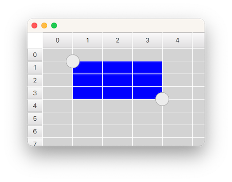

SelectionRectangle QML Type
Used to select table cells inside a TableView. More...
| Import Statement: | import QtQuick.Controls |
| Since: | Qt 6.2 |
| Inherits: |
Properties
- active : bool
- bottomRightHandle : Component
- dragging : bool
- selectionMode : enumeration
- target : Item
- topLeftHandle : Component
Attached Properties
Detailed Description

SelectionRectangle is used for selecting table cells in a TableView. It lets the user start a selection by doing a pointer drag inside the viewport, or by doing a long press on top of a cell.
For a SelectionRectangle to be able to select cells, TableView must have an ItemSelectionModel assigned. The ItemSelectionModel will store any selections done on the model, and can be used for querying which cells that the user has selected.
The following example shows how you can make a SelectionRectangle target a TableView:
TableView {
id: tableView
anchors.fill: parent
clip: true
model: TableModel {
TableModelColumn { display: "name" }
rows: [ { "name": "Harry" }, { "name": "Hedwig" } ]
}
selectionModel: ItemSelectionModel {
model: tableView.model
}
delegate: Rectangle {
implicitWidth: 100
implicitHeight: 30
color: selected ? "blue" : "lightgray"
required property bool selected
Text { text: display }
}
}
SelectionRectangle {
target: tableView
}
Note: A SelectionRectangle itself is not shown as part of a selection. Only the delegates (like topLeftHandle and bottomRightHandle) are used. You should also consider rendering the TableView delegate as selected.
See also TableView, TableView::selectionModel, and ItemSelectionModel.
Property Documentation
active : bool |
This property is true while the user is performing a selection. The selection will be active from the time the the user starts to select, and until the selection is removed again, for example from tapping inside the viewport.
bottomRightHandle : Component |
This property holds the delegate that will be shown on the center of the top-left corner of the selection rectangle. When a handle is provided, the user can drag it to adjust the selection.
The handle is not hidden by default when a selection is removed. Instead, this is the responsibility of the delegate, to open up for custom fade-out animations. The easiest way to ensure that the handle ends up hidden, is to simply bind visible to the active state of the SelectionRectangle:
SelectionRectangle { bottomRightHandle: Rectangle { width: 20 height: 20 visible: SelectionRectangle.control.active } }
Set this property to null if you don't want a selection handle on the bottom-right.
See also topLeftHandle.
dragging : bool |
This property is true whenever the user is doing a pointer drag or a handle drag to adjust the selection rectangle.
selectionMode : enumeration |
This property holds when a selection should start.
| Constant | Description |
|---|---|
SelectionRectangle.Drag | A selection will start by doing a pointer drag inside the viewport |
SelectionRectangle.PressAndHold | A selection will start by doing a press and hold on top a cell |
SelectionRectangle.Auto | SelectionRectangle will choose which mode to use based on the target and the platform. This normally means PressAndHold on touch based platforms, and Drag on desktop. However, Drag will only be used if it doesn't conflict with flicking. This means that TableView will need to be configured with interactive set to false, or placed inside a ScrollView (where flicking, by default, is off for mouse events), for Drag to be chosen. |
The default value is Auto.
target : Item |
This property holds the TableView on which the SelectionRectangle should act.
topLeftHandle : Component |
This property holds the delegate that will be shown on the center of the top-left corner of the selection rectangle. When a handle is provided, the user can drag it to adjust the selection.
The handle is not hidden by default when a selection is removed. Instead, this is the responsibility of the delegate, to open up for custom fade-out animations. The easiest way to ensure that the handle ends up hidden, is to simply bind visible to the active state of the SelectionRectangle:
SelectionRectangle { topLeftHandle: Rectangle { width: 20 height: 20 visible: SelectionRectangle.control.active } }
Set this property to null if you don't want a selection handle on the top-left.
See also bottomRightHandle.
Attached Property Documentation
SelectionRectangle.control : SelectionRectangle |
This attached property holds the SelectionRectangle that manages the delegate instance. It is attached to each handle instance.
SelectionRectangle.dragging : bool |
This attached property will be true if the user is dragging on the handle. It is attached to each handle instance.